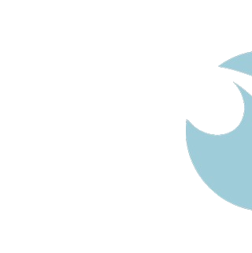

Dos programas diseñados en la clínica para el bienestar de la mujer. Ginecología, nutrición, fisioterapia y terapia NESA trabajan juntos, no por separado.
La diferencia entre los dos está en la intensidad y en que Prime incorpora el Emsculpt Neo. El resto de áreas son las mismas, con más sesiones en cada una.
Empezamos con una valoración y desde ahí construimos el programa. Todas las especialidades se coordinan entre sí desde el primer día.
Electrodos en muñecas y tobillos que regulan el sistema nervioso autónomo sin dolor ni agujas. La mayoría de pacientes nota calma y ligereza desde la primera sesión.
Dos consultas para ver el estado hormonal y ginecológico. Lo que se obtiene aquí orienta el trabajo del resto del equipo a lo largo del programa.
No va de dietas restrictivas — va de entender cómo la alimentación afecta la energía, el ciclo y el bienestar. Enfoque práctico y funcional para el día a día.
El suelo pélvico tiene más impacto del que parece: afecta la postura, el dolor lumbar y el sistema nervioso. La valoración complementa y potencia el trabajo de todo el equipo.
Todo lo que incluye Woman Balance, con más sesiones en cada área y la incorporación del Emsculpt Neo para las pacientes que quieren ir un paso más allá.
Combina radiofrecuencia para reducir grasa y estimulación electromagnética para tonificar músculo, en 30 minutos. Sin cirugía, sin agujas y sin recuperación. Una sesión equivale a 20.000 contracciones musculares.
Exclusivo del programa Prime. Cinco sesiones de 30 minutos que trabajan grasa y músculo a la vez, complementando el resto del programa desde dentro.
Terminar el programa no es el final. Hay un protocolo de seguimiento para que los resultados se mantengan y se consoliden a lo largo de los meses.
En cada cita se elige la modalidad según cómo esté la paciente y qué necesite en ese momento.
Revisión de cómo ha ido, tratamiento manual y pautas actualizadas según la evolución.
No es empezar de cero — es ajustar lo que ya funciona a la fase de mantenimiento.
Valoración final y recomendaciones para seguir con un plan claro a partir de ahí.